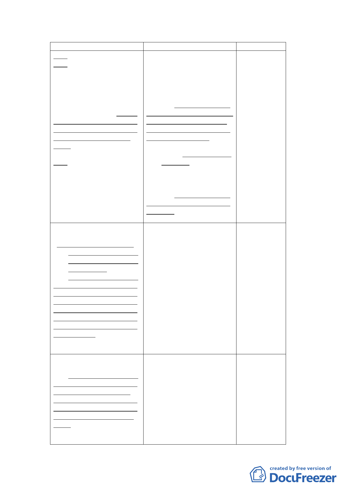

新計畫
求。
(三)公園用地－滿足地區休
憩需求
臨近福德街與福德街84
巷側配置約1.6公頃公園用
地，提供周邊地區居民休閒
活動空間。並得以多目標方
式設置地下停車場。惟實際
設置數量及期程得視周邊停
車供需情形併周邊商業區、
社會福利設施用地檢討設
置。
(四)商業區－提供鄰里性商
務需求。
於福德街與大道路交口
處配置約1.6公頃商業區，提
供及提昇周邊地區日常商務
需求設施。
原計畫
說明
所設置之部
(二)公園用地－滿足地區休 分停車位亦
憩與停車需求。
可供地區使
臨近福德街與福德街84 用，爰增加後
巷側配置約1.6公頃公園用 續開發彈
地，提供週邊地區居民休閒 性，得視周邊
活動空間，並得以多目標方 停車供需情
式設置地下停車場，設置500 形調整實際
個小汽車停車格位及500個 停車設置數
機車格位，滿足週邊居民及 量及期程，或
捷運轉乘停車需求。
提出替代計
(三)商業區－提供鄰里性商 畫等方式辦
務需求並挹注社會福利 理。
設施財源。
4.因商業區、社
於福德街與大道路交口 會福利設施
處配置約1.6公頃商業區，提 用地修正採
供及提昇週邊地區日常商務 分別開發，故
需求設施，藉由商業區之開 刪除部分構
發提升社會福利事業自償經 想內容。
營之能力。
5.修正條次。
参、計畫原則與構想
二、交通運輸系統
(四)基地開發應將停車需
求內部化，配合吸納地
區公共停車需求，以減
緩交通衝擊
本計畫地區現況發展強
度密集，考量提高使用強度
將造成地區交通衝擊，故社
會福利設施用地、商業區後
續開發應將衍生之交通量內
部化，並配合相關交通改善
措施提供地區停車位，以減
緩交通衝擊。
参、計畫原則與構想
二、交通運輸系統
考量本計畫周
邊現況發展程
度密集，為避
免基地開發造
成周邊交通衝
擊，影響道路
服務水準，新
增基地開發所
衍生之交通量
應內部化之計
畫原則，並應
配合周邊交通
改善措施，提
供地區停車
位。
参、計畫原則與構想
三、開發強度
為提高公有土地利用效
能，並配合本市公營住宅政
策，滿足市民基本居住需
求，在不影響周邊交通服務
水準，及原機關用地容積率
400％上限下，進行規劃開
發。
参、計畫原則與構想
配合本府公營
三、開發強度
住宅政策，在周
本計畫區原屬機關用 邊道路服務水
地，建蔽率40％、容積率400 準、停車需求等
％，惟地區現況發展強度密 可負荷之前提
集，公共設施服務水準不 下，參酌原機關
佳，宜降低整體開發強度， 用地開發強度
故比照鄰近第三種住宅區容 之規定進行後
積率之225％進行本計畫區 續開發。
開發總量管制。
- 14 -